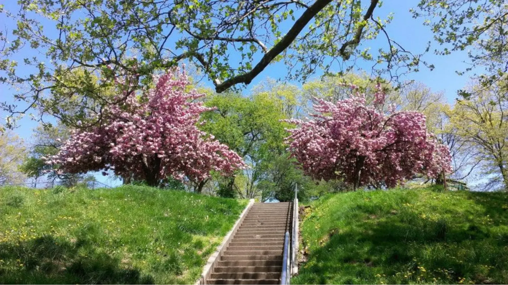

Our recreational dispensary in Jersey City may be called The Retreat, but even we are humble enough to admit that one of the best retreats is nature.
Whether you need to unwind, reflect, or escape the battle of daily life and the world around us, nature is often the best place to find calm. In fact, according to Harvard, spending at least 20 to 30 minutes immersed in a nature setting reduces stress by lowering cortisol levels, blood pressure, and heart rate.
Even in Jersey City, you can find calm, peace, and intentionality through nature with all the beautiful parks and natural scenery in New Jersey. You can pair your nature outings with some cannabis or simply find a place to enjoy some open air, taking walks, bike rides, relaxing on a park bench, or something else.
In this guide, we’re rounding up our favorite local parks in Jersey City that you can retreat to whenever you need a break.
Liberty State Park for an Iconic Waterfront Escape
You want an iconic escape? Liberty State Park is one of the largest and most beloved parks in Jersey, spanning 1,212 acres with everything from waterfront trails and grassy open fields to skyline views and walking/biking paths.
Located about a 10-minute drive from The Retreat, Liberty State Park is most known for the Liberty Landing Marina Trail. This trail winds along the Hudson River and catches views of the Statue of Liberty and Ellis Island, making it a peaceful alternative to a close-up visit. Although, the park is also the only location in New Jersey with Ferry service to Ellis Island and the Statue of Liberty, so you could always change your mind and head on over.
The trail has plenty of benches along the way to sit and enjoy the view, have a quick bite to eat, or listen to a podcast in nature. Liberty State Park has stretches of open field and pathways, including an outdoor performance area for all types of recreation and events.
Although public consumption is not legal in Jersey City, you can consume discreetly at home before/after to enhance your experience in nature.
- Hit your vape and walk the promenade and riverfront trails with Manhattan skyline views.
- Take an edible and picnic in one of the open fields.
- Enjoy some tincture and relax on quiet benches and watch the sunset.
- Take a puff of your flower or pre-rolls and find spots for photography, like the ferry access views and historical areas like the Central Railroad Terminal.
You can also retreat in nature without consumption. The Liberty State Park and the Hudson River waterfront are the most popular places for biking locally. Whether you consume before or after, this local Jersey City park is the perfect place to escape and enjoy cannabis and nature.
J. Owen Grundy Park for Waterfront Views & City Vibes
For the best sunset views in the city, J. Owen Grundy Park is a must. Locals rave about the atmosphere during golden hour, with the sunset sweeping over skyscrapers. Add in a little cannabis, and you’ve got the most mesmerizing sunset that will have you thinking you’re in another galaxy.
Although small, J. Owen Grundy Park is still one of Jersey City’s more scenic natural retreats. With benches, boardwalk paths, and spectacular views of the Manhattan skyline and river, it’s great for a more reflective trip.
Located on Hudston Street, near Exchange Place PATH station, this park is only about 1.5-2 miles from The Retreat. Closeby, you can find downtown eateries and coffee shops for a relaxed post-park snack.
Again, public use isn’t allowed here, but pairing a scenic walk with some of The Retreat’s more discreet cannabis products is a vibe you have to experience. You can even find game tables and pavillion that sometimes hosts festivals and shows to help rally through before or after some private consumption.
Lincoln Park for Expansive Green Space & Nature Trails
One of the largest green spaces in Hudson County is Lincoln Park. With a nature walk, wetlands, ponds, and paths all over, this park is perfect for strolling, biking, or simply sitting among trees.
Lincoln Park East’s 150 acres are home to numerous athletic facilities, children’s areas, historic monuments, and even, publically-available Wi-Fi-internet access. It’s just a 10-15 minute car ride from The Retreat cannabis dispensary.
Unlike Liberty State Park which feels very much like a city park, Lincoln Park (not to be confused with Linkin Park…) is an oasis of recreational activity. It has:
- 21 tennis courts
- 7 baseball/softball diamonds
- 2 football fields
- 5 basketball courts
- 4 handball courts
- 2 soccer fields,
- A multipurpose field
- A running track
- A cross-country course
- A horseshoe pit
And so much more! If you’re looking for a social retreat to enjoy with friends, then this is the one for you. Lincoln Park has full-length trails, barbecue areas, the Skyway Golf Course, and Urban Paddle kayak rentals, making it a great stop to enjoy nature with friends before returning home or to a private spot for some intentional consumption.
For a more relaxed experience, you can spend time in Lincoln Park West, which includes a Nature Trail (~1.7 miles) for biking or walking through open natural areas.
In Jersey City, this area is known to be a must-go spot for birdwatchers, where you can spot rare bird species in the park, such as Black Skimmers, Osprey, and Egrets.
With quiet resting areas along the Hackensack River shoreline, and fishing-accessible Edgewood Lake, there are plenty of options in Lincoln Park for a peaceful nature observation or a more rejuvenating experience.
If you’re consuming at home before visiting, try a journaling session or mindful breathwork in the park to let the effects of cannabis deepen into your body as you are surrounded by nature.

Other Tranquil Outdoor Spots Worth Exploring
If you’re looking for lesser-known serene areas near The Retreat, here are a few our Jersey City dispensary team recommend:
- Hackensack River Greenway – a 3.5 mile pedestrian walkway and nature trail for peaceful walks along the Hudson County shoreline
- Leonard Gordon Park – a hillside urban park with captivating animal sculptures, a gazebo, and shady walking paths
- Pershing Field Garden – 13.5 acres of large open city square and park areas bounded by Summit Avenue, Central Avenue, and Manhattan Avenue
How to Enjoy Cannabis Responsibly Around Jersey City Parks
As the local recreational dispensary in Jersey City, it’s our duty to inform of you of what you can and cannot do with cannabis around New Jersey’s public parks.
First, while cannabis and nature are two things that go together very well, it’s important to know the law before you consume. New Jersey state law is clear that cannabis consumption in public places, including parks and streets, is illegal.
However, you can possess up to 6 ounces as an adult 21+, and consume in private, such as in a home or private property. The specific languages states that “You may smoke in private spaces, however, landlords may prohibit cannabis use on their property. Cannabis smoking is allowed where cigarette smoking is permitted, unless stated otherwise.”
To enjoy cannabis responsibly:
- Plan ahead: Enjoy cannabis at home before or after park time.
- Be discreet: Carry in sealed containers; keep odors minimal.
- Respect others: Many people use parks for exercise, pets, or family time; avoid areas where people expect a completely neutral public environment, such as playgrounds.
- Travel safely: Never consume cannabis before driving; use rideshare, public transportation, or walk to your destination.
Remember, as of 2025, social consumption lounges and private consumption spaces are expected to be popping up in and around Jersey City, but for now, private venues are the legal way to enjoy your cannabis.
Find Your Retreat in Jersey City
Nature and cannabis are a pair that practically meet the definition of “retreat.” Whether it’s a waterside walk, a nature trail stroll, or just sitting under the sky and skyline, Jersey City parks are the best place to relax amidst nature.
While public cannabis use isn’t permitted, pairing a park experience with intentional private enjoyment at The Retreat (or at home) can create a deeply restorative weekend or evening routine.
Drop by The Retreat, pick up your favorite products, and find your retreat in Jersey City’s nature, responsibly and meaningfully. You can browse our online menu or visit our cannabis dispensary in-store in Jersey City. We’re open Monday to Saturday 10 AM to 9 PM and Sundays from 11 AM to 6 PM.